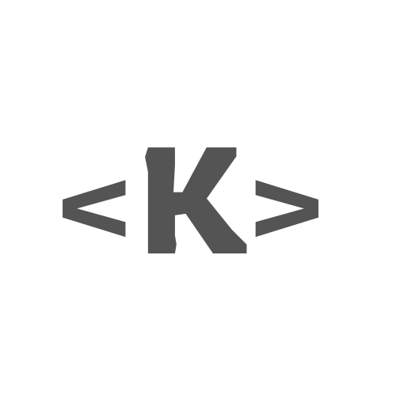

I’m Anh Khoa (Markus), an Advanced Computer Science undergrad at the University of Adelaide. I’m passionate about AI and ML, whether designing neural networks for complex data or crafting personalized recommender systems, and I thrive on tackling the problem‑solving challenges of software engineering.
Outside the code I channel my creativity into designing striking visuals, producing short‑form videos and crafting engaging content that speaks to audiences.